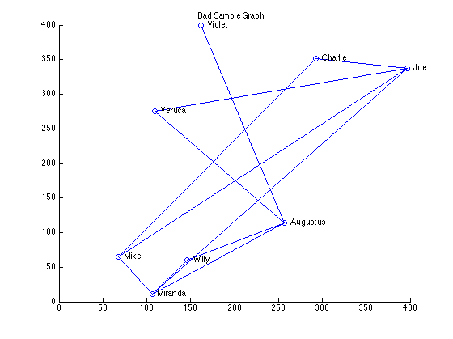
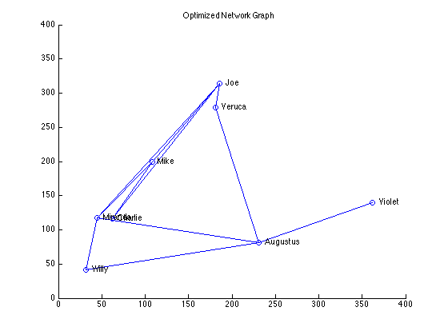

Chapter 5: Optimization (Page 86)
"Programming Collective Intelligence - Building Smart Web 2.0 Applications" by Toby Segaran (O'Reilly Media, ISBN-10: 0-596-52932-5)
This chapter shows how to solve collaboration problems using stochastic optimization techniques. They are used to find optimal solutions for a problem with too many possible solutions to try one by one.
This chapter provides 3 separate examples of optimization problems. The first example of this chapter is about a family reunion - family members live all over the country but they want to meet in New York.
- They would like to arrive on the same day and leave on the same day.
- They would like to share transportation to and from the airport.
- There are number of possible flights with varying price and schedules.
- Find the least expensive schedule for the entire family.
To run codes in this chapter you need Communication Toolbox for 'randint' call.
Contents
- Group Travel - Load data for the family reunion problem (Page 87)
- getminutes function (Page 88)
- Representing Solutions (Pages 88-89)
- The Cost Function (Pages 89-91)
- Random Searching (Pages 91-92)
- Hill Climbing (Pages 92-94)
- Simulated Annealing (Pages 95-96)
- Genetic Algorithms (Pages 97-99)
- Summary of flight scheduling problem (Page 100)
- Real Flight Searches - Sign up Kayak and Start a Session (Page 101-103)
- Flight Searches - Get a Search ID (Page 103)
- Polling the search result (Page 104)
- Get the full result (Page 104)
- Turning the process into a function (Page 105)
- Optimizing for Preferences - Student Dorm Optimization (Pages 106-107)
- Representing the solution (Page 108)
- The Cost Function (Page 109)
- Running the Optimization (Page 109)
- Network Visualization - The Layout Problem (page 111)
- Counting Crossed Lines - representing solutions (Page 112)
- Counting Crossed Lines - cost function (Page 112)
- Counting Crossed Lines - Run the Optimization (Pages 112-113)
- Drawing the Network (Page 113)
- Drawing the Network - improved cost function (Page 115)
Group Travel - Load data for the family reunion problem (Page 87)
% Create a cell array to hold names and departing airports of family % members. Please note that nobody lives in New York. people={'Seymour','BOS'; 'Franny','DAL'; 'Zooey','CAK'; 'Walt','MIA'; 'Buddy','ORD'; 'Les','OMA'}; % 'LGA' = La Guardia (New York) is the common destination. dest='LGA'; % Prepare to load schedule data from a text file format = '%s %s %s %s %d'; fid = fopen('schedule.txt'); file = textscan(fid, format, 'delimiter', ',', 'CollectOutput', 1); schedule=file{1,1}; schedule(:,5)=num2cell(file{1,2}); fclose(fid); clear ans format fid file; % Create a cell array 'flights' that holds 'depart', 'arrive', and 'price' % combinations for a given origin-destination pair. The rows represents the % origin as indicated in cell array 'people'. The first column holds data % for outbound flights to New York, and the second for return flights. % Thankfully they are all taking direct flights only, so we don't have to % think about connecting flighgts. flights=cell(size(people,1),2); for i=1:size(schedule,1) % the first column is the origin if strmatch(dest,schedule(i,1)) % This is a return flight % find the origin instead idx=strmatch(schedule{i,2},people(:,2)); % store the data in columin 2 if isempty(flights{idx,2}) flights{idx,2}=schedule(i,3:5); else flights{idx,2}(end+1,:)=schedule(i,3:5); end else % this is an outbound flight idx=strmatch(schedule{i,1},people(:,2)); if isempty(flights{idx,1}) flights{idx,1}=schedule(i,3:5); else flights{idx,1}(end+1,:)=schedule(i,3:5); end end end clear i idx schedule;
getminutes function (Page 88)
calculates how many minutes into the day a given time is.
% this should return '650'. disp(sprintf('getminutes(''10:50'')=%d',getminutes('10:50')))
getminutes('10:50')=650
Representing Solutions (Pages 88-89)
In order to apply optimization techniques, we need to come up with a very simple way of representing solutions. This is because we want to generate random solutions to find the optimal one. If the solution is in a simple form, this randomization process also becomes simpler.
This book uses a vector to represent a solution. Each number in the vector represents which flight a given person can take, where 0 is the first flight of the day, 1 the second, so on. Since each person needs outbound flights and return flights, we need 2 numbers per person, in the order they appear in the 'People' cell array. The first number is for Seymour's outbound flight, the second his return flight, the third Franny's outbound, etc.
By the way, representing the solution this way is very matrix-unfriendly, because you have to piece together data element by element to calculate cost or print the solution to a human readable format. This is fine for Python because it is a more traditional programming languages and you have to use a lot of 'for' loops to manipulate matrices. It is more efficient to use Matrix-based manipulation in MATLAB, but require complete reformulation of the solutoin format. I made a conscious choice to stay close to the examples in the book, and I apologize for liberal use of 'for' loops in my re-implementations.
% Book uses a sample solution to demonstrate the concept. Because MATLAB's % indexing is one-based, not zero-based like Python, so we need to add 1 to % the book's sample solution. s=[1,4,3,2,7,3,6,3,2,4,5,3]+1; % Let's print the sample solution. disp(' ') disp('Sample solution') disp(' ') printschedule(s);
Sample solution
Seymour BOS 8:04-10:11 $ 95 12:08-14:05 $142
Franny DAL 10:30-14:57 $290 9:49-13:51 $229
Zooey CAK 17:08-19:08 $262 10:32-13:16 $139
Walt MIA 15:34-18:11 $326 11:08-14:38 $262
Buddy ORD 9:42-11:32 $169 12:08-14:47 $231
Les OMA 13:37-15:08 $250 11:07-13:24 $171
The Cost Function (Pages 89-91)
The purpose of optimization is to find the optimal condition for something, so we need to define what it is - that's what the cost function is for. In this example, we would like to minimize the cost, not just for the airfare, but also the travel time, waiting time, departure time, car rental period, etc., but we need to pick the most important factors. We aslo have to think of a way to combine different cost measures into a single number. Here we will consider the airfare, wait time, and car rental cost as factors, and treat 1 minute as worth $1.
disp(' ') disp(['Sample solution cost =' sprintf('%10d', schedulecost(s))]) clear s;
Sample solution cost = 4635
Random Searching (Pages 91-92)
Possible solutions for the above cost function are very large. If you look at 'flights', each person has 10 flights each direction to choose from and there are 6 people needing round trip flights, so the total possible combination is 10^(6*2) - a big number.
Rather than attempting to evaluate all possible solutions, here we will try to randomly generate 1000 guesses and test which one has the lowest cost. Since we are only testing a small fraction of possible solutions, this strategy is not expected to yield very good results.
When we generate a guess, we would like to make sure that the numbers are not out of bound of possible solutions. We need some mechanism to ensure that values stay within expected ranges in a generic, non problem- specific way.
Domain defines the range of values a given element in the solution vector can take - Row1=Min value, Row2=Max value. The column length should be the same as resulting solutions.
% Here we have 6 people x 2 flights = 12 flights in total, and each can % choose from 10 possible flights. so that domain is... domain=repmat([1;10],1,size(people,1)*2); % Find a random solution disp(' ') disp('Starting Random Searching...') s=randomoptimize(domain,@schedulecost); % Display the result disp(' ') disp(['Random Searching Cost=' sprintf('%10d', schedulecost(s))]) disp(' ') printschedule(s) clear s;
Starting Random Searching...
Random Searching Cost= 4235
Seymour BOS 15:27-17:18 $151 13:39-15:30 $ 74
Franny DAL 13:54-18:02 $294 18:44-22:42 $351
Zooey CAK 12:08-14:59 $149 18:17-21:04 $259
Walt MIA 9:15-12:29 $225 14:08-16:09 $232
Buddy ORD 15:58-18:40 $173 15:04-17:23 $189
Les OMA 13:37-15:08 $250 15:07-17:21 $129
Hill Climbing (Pages 92-94)
Rather than trying possible solutions randomly, Hill Climbing take advantage of existing result to explore neighboring solutions. It is called 'Hill Climbing' because possible solutions can be conceptually mapped to a 'solution space'. Possible solutions form a surface with ups and downs. To find the lowest cost solution, you want to go down the slope on this surface.
Here we want to generate a random solution as before, but then modify it with one person taking slightly earlier or later flights to see if that can improve the result. We can generate full permutations of a given solution this way. If any of those permutations is better, that becomes the new solution. This process is repeated until you cannot find any neighboring solutions that can improve the result.
% Find a lowest cost solution in the hilly landscape disp(' ') disp('Starting Hill Climbing...') s=hillclimb(domain,@schedulecost); % Display the result disp(' ') disp(['Hill Climbing Cost =' sprintf('%10d', schedulecost(s))]) disp(' ') printschedule(s) clear s;
Starting Hill Climbing...
Hill Climbing Cost = 3440
Seymour BOS 12:34-15:02 $109 10:33-12:03 $ 74
Franny DAL 10:30-14:57 $290 17:14-20:59 $277
Zooey CAK 12:08-14:59 $149 13:37-15:33 $142
Walt MIA 11:28-14:40 $248 12:37-15:05 $170
Buddy ORD 9:42-11:32 $169 10:33-13:11 $132
Les OMA 9:15-12:03 $ 99 15:07-17:21 $129
Simulated Annealing (Pages 95-96)
Problem with Hill Climbing is that it cannot deal with a complex landscape with multiple low points surrounded by higher grounds. You can find a low point, but you are not sure if that's really the lowest point in the landscape. Low points that are not necessarily the lowest points are called 'local minimums'. The real lowest point is called 'global minimum'.
Simulated Annealing deals with this problem by taking a hint from the process of heated metal alloy to cool down slowly, with atoms initially jumping around all over the place but eventually settling down to a low energy configuration.
Like Hill Climbing, Simulated Annealing starts with a random guess and make a random permutation. The costs are compared between the original guess and its permutation. If the permutation is better, then it becomes the new solution. If the permutation is more costly, it can still become a new solution with a certain probability, in order to avoid being stuck in a local minimum.
Simulated Annealing will accept worse solutions in the beginning with a certain probability, but this probability quickly go down. This gradual probability reduction is implemented in the following formula:
p=exp((-highcost-lowcost)/temperature)
Temperature goes down in each iteration. With high temperature, the p is high. As the temperature goes down, the difference between highcost and lowcost becomes more important, and the bigger the difference lower the probability.
Default Simulated Annealing parameters:
- T=10000.0; initial temperature;
- cool=0.95; cooling factor;
- step=1; randomizing step - randomize between -step and step;
% Find the lowest cost using Simulated Annealing process disp(' ') disp('Starting Simulated Annealing...') s=annealingoptimize(domain,@schedulecost); % Display the result disp(' ') disp(['Simmulated Annealing Cost =' sprintf('%10d', schedulecost(s))]) disp(' ') printschedule(s) clear s;
Starting Simulated Annealing...
Simmulated Annealing Cost = 3514
Seymour BOS 20:17-22:22 $102 13:39-15:30 $ 74
Franny DAL 13:54-18:02 $294 17:14-20:59 $277
Zooey CAK 18:35-20:28 $204 13:37-15:33 $142
Walt MIA 19:53-22:21 $173 15:23-18:49 $150
Buddy ORD 19:50-22:24 $269 14:19-17:09 $190
Les OMA 12:18-14:56 $172 15:07-17:21 $129
Genetic Algorithms (Pages 97-99)
Another method inspired by nature is called 'Genetic Algorithms', and it starts with a set of random solutions known as 'population'. The cost function is applied to the entire population, and the best solution becomes the basis of the new set of solutions called 'next generation', which is made up of the best performing solution from the original population and additional solutions are newly generated by modifying this solution.
There are two ways to create a new generation. One is called 'mutation', which is a random change to an existing solution. The other is called 'crossover' or 'breeding', which combines the two best existing solutions to generate new solutions. This process is repeated for a set number of iterations or until no improvement is made for a number of generations.
Default Genetic Algorithms parameters:
- popsize=50; size of initial population;
- step=1; the magnitude of change to make in mutation;
- mutprob=0.2; probability of mutation;
- elite=0.2; fraction of population to survive;
- maxiter=100; max number of generations to generate;
% Find the lowest cost using Genetic Alogrithms disp(' ') disp('Starting Genetic Algorithms...') s=geneticoptimize(domain,@schedulecost); % Display the result disp(' ') disp(['Genetic Algorithms Cost =' sprintf('%10d', schedulecost(s))]) disp(' ') printschedule(s) clear s domain flights;
Starting Genetic Algorithms...
Genetic Algorithms Cost = 2823
Seymour BOS 17:11-18:30 $108 10:33-12:03 $ 74
Franny DAL 13:54-18:02 $294 10:51-14:16 $256
Zooey CAK 17:08-19:08 $262 10:32-13:16 $139
Walt MIA 15:34-18:11 $326 15:23-18:49 $150
Buddy ORD 15:58-18:40 $173 10:33-13:11 $132
Les OMA 16:51-19:09 $147 11:07-13:24 $171
Summary of flight scheduling problem (Page 100)
The optimization strategies we studied so far rely on an assumption that the best solution can be found near good solutions and they are connected by a continual slope. If the solution landscape looks like a hill country this would work. If it looks like the Rocky Mountains, those algorithms may only yield local minimum rather than global minimum, because it may be hidden in a sudden chasm.
In the example case, picking one flight earlier or later will not likely to make dramatic change in cost, so the solution landscape is more like a hill country, and therefore those optimization approaches make sense. If the flight schedule is ordered randomly, rather than the time of departure, then the landscape will become more unpredictable and none of the strategies will have much advantage over the random search.
Real Flight Searches - Sign up Kayak and Start a Session (Page 101-103)
Rather than using sample dataset, we can test the above approaches using real flight data from a website called Kayak through their Kayak API: http://www.kayak.com/labs/api/search You need to sign up for this service to get the developer key. Go to http://www.kayak.com and click on 'sign in' to create a user account and get your developer key.
In my case, I ran into errors from Kayak API when I try to access it from within MATLAB. I didn't run into this problem if I access the same API using Internet Explorer. So I just downloaded the XML responses and tested the codes using those XML files.
MATLAB provides 'xmlread' function to access XML file or URL and obtain DOM (=Document Object Model) object. DOM is an excellent way to handle XML or well-formed XHTML documents. In Chapter 2, the book gave an exmaple to access del.icio.us API and I mentioned that 'xmlread' could be used to handle API response. Now I am going to use it in this example.
% Here we would construct a URL with required parameters to access the API. % Required parameter for this section is Kayak developer key. % Instead we use a sample XML file for simplicity. url='getsession.xml'; % Get XML doc=xmlread(url); % Session ID is in <sid></sid> tag in the DOM tree sid=char(doc.getElementsByTagName('sid').item(0).getFirstChild.getData); clear doc url;
Flight Searches - Get a Search ID (Page 103)
Now that you have the session ID, which will remain valid for 30 minutes, you want to start the search using this session ID. The process of conducting searches through Kayak API is asynchronous process - when you initiate a search by passing some search criteria to the Search API, you get a 'Search ID' rather than the search result directly. You use the Search ID to poll the result later.
% Here we would construct a URL with required parameters to access the API. % Required parameter for this section is sid, origin, destination, % and depart_date, where origin='BOS' and destination='LGA', and the date % is given in mm/dd/yyyy format. sid is, of course, Session ID. % Instead we use a sample XML file for simplicity. url='startflight.xml'; % get XML doc=xmlread(url); % Search ID is in <searchid></searchid> tag in the DOM tree searchid=char(doc.getElementsByTagName('searchid').item(0).getFirstChild.getData); clear doc url;
Polling the search result (Page 104)
Now we can use the Session ID and Search ID to poll the result. First, you have to check if more data is pending. If the result is false, then you can stop polling and get the full data.
% Here we would construct a URL with required parameters to access the API. % Required parameter for this section is sid, and searchid. % Instead we use a sample XML file for simplicity. url='flight_morepending.xml'; % Read a sample XML file for testing, and look for 'morepending tag'. % This part should be implemented as 'while' loop so that we can keep % polling until the full result is ready. doc=xmlread(url); morepending=doc.getElementsByTagName('morepending').item(0).getFirstChild; if isempty(morepending) || strcmp(morepending.getData,'false') disp('no more pending data') else disp('more pending data to poll') end % Repeat the above, except this time we will use a different XML file url='flight_nomorepending.xml'; doc=xmlread(url); morepending=doc.getElementsByTagName('morepending').item(0).getFirstChild; if isempty(morepending) || strcmp(morepending.getData,'false') disp('no more pending data') else disp('more pending data to poll') end
more pending data to poll no more pending data
Get the full result (Page 104)
Now that we have the full data, we need to get it. For this you need to make a slight change to the polling URL so that it now returns the full dataset.
% We will use yet another sample XML file to test. url='flight.xml'; % Get XML and extract 'price', 'depart', and 'arrive' tags doc=xmlread(url); dom_departures=doc.getElementsByTagName('depart'); dom_arrivals=doc.getElementsByTagName('arrive'); dom_prices=doc.getElementsByTagName('price'); % How many items in the object? All three should be the same. rowsize=dom_departures.getLength; result=cell(rowsize,5); for i=1:rowsize % We used the same search criteria for all those results % which are origin='BOS' and destination='LGA' result{i,1}='BOS'; result{i,2}='LGA'; % The returned data is in 'date time' format, but we only need time % Beware that DOM object is zero-indexed. nodedata=regexp(char(dom_departures.item(i-1).getFirstChild.getData),' ','split'); result(i,3)=nodedata(1,2); nodedata=regexp(char(dom_arrivals.item(i-1).getFirstChild.getData),' ','split'); result(i,4)=nodedata(1,2); % price data doesn't have any formatting - just plain numbers. result{i,5}=str2double(char(dom_prices.item(i-1).getFirstChild.getData)); end % Now let's print the result - it should look like the content of 'schedule.txt' disp(' ') disp('The first 5 results returned') disp(' origin dest depart arrive price') disp(result(1:5,:)) clear sid searchid morepending url doc i nodedata rowsize; clear dom_departures dom_arrivals dom_prices result;
The first 5 results returned
origin dest depart arrive price
'BOS' 'LGA' '19:40' '21:00' [170]
'BOS' 'LGA' '18:35' '20:00' [170]
'BOS' 'LGA' '09:45' '10:59' [170]
'BOS' 'LGA' '11:50' '13:00' [170]
'BOS' 'LGA' '08:30' '09:45' [170]
Turning the process into a function (Page 105)
We have seen how you can call Kayak API and get real flight schedule in the format that we can use for our family reunion problem, but the steps so far have been pretty manual. I created a custom MATLAB function that put all the process into one comand, 'createschedule'.
% Calling 'createschedule'... disp(' ') disp('Calling ''createschedule''...') flights=createschedule(people(1,:),dest,'03/17/2008','03/19/2008'); disp(' ') disp('The last 5 results returned for return flights') disp(' depart arrive price') disp(flights{1,2}(end-4:end,:)) % There are 183 possible flights to choose from. domain=repmat([1;183],1,size(flights,2)); % Try Genetic Algorithms s=geneticoptimize(domain,@schedulecost); % Display the result disp(' ') disp(['Genetic Algorithms Cost =' sprintf('%10d', schedulecost(s))]) disp(' ') printschedule(s) clear all;
Calling 'createschedule'...
The last 5 results returned for return flights
depart arrive price
'12:00' '17:02' [1040]
'13:30' '20:05' [1221]
'11:10' '16:29' [1221]
'17:30' '22:47' [1221]
'13:25' '19:25' [1524]
Genetic Algorithms Cost = 340
Seymour BOS 09:45-10:59 $170 18:35-20:00 $170
Optimizing for Preferences - Student Dorm Optimization (Pages 106-107)
Here is the second example of optimization problems in this chapter. Optimization can be applied to many seemingly unrelated problems. So long as you have a defined cost function and that similar solutions tend to yield similar results, we can use Optimization.
So here is a new, completely different problem we would like to look at and figure out how to apply optimization techniques. This problem involves assigning students to dorms. 10 Students submitted applications with their first and second choices indicated, and there are 5 rooms with capacity of two each. So we need to come up with the room assignments that has the as high matches as possible with student preferences. There will be 100,000 possible room assignment scenario to pick from.
% The dorms, each of which has two available spaces dorms={'Zeus', 'Athena', 'Hercules', 'Bacchus', 'Pluto'}; % people along with their first and second choices people={'Toby','Steve','Andrea','Sarah','Dave','Jeff','Fred','Suzie','Laura','Neil'}; prefs=[4,3;1,5;2,1;1,5;2,4;3,5;5,2;4,3;4,3;3,2]; disp(' ') disp('Dorm assignment problem') for i=1:size(people,2) disp(sprintf('%10s: 1st: %8s | 2nd: %8s',people{i},dorms{prefs(i,1)},dorms{prefs(i,2)})) end clear i;
Dorm assignment problem
Toby: 1st: Bacchus | 2nd: Hercules
Steve: 1st: Zeus | 2nd: Pluto
Andrea: 1st: Athena | 2nd: Zeus
Sarah: 1st: Zeus | 2nd: Pluto
Dave: 1st: Athena | 2nd: Bacchus
Jeff: 1st: Hercules | 2nd: Pluto
Fred: 1st: Pluto | 2nd: Athena
Suzie: 1st: Bacchus | 2nd: Hercules
Laura: 1st: Bacchus | 2nd: Hercules
Neil: 1st: Hercules | 2nd: Athena
Representing the solution (Page 108)
First step is to come up with a representation of possible solution that satisfies the constraints of the problem:
- Exactly two students has to be assigned to each room.
- Number of available spaces decrease as we assign students one by one.
% domain captures the number of available spaces as we itierate room % assignement for each student. domain(1,:)=ones(1,size(dorms,2)*2); domain(2,:)=size(dorms,2)*2:-1:1; % sample solution for testing - must stay within the ceiling defined in % domain or you'll get an error. s=ones(1,size(dorms,2)*2); % print the sample solution. disp(' ') disp('Sample solution') printdormsolution(s)
Sample solution Toby -> Zeus Steve -> Zeus Andrea -> Athena Sarah -> Athena Dave -> Hercules Jeff -> Hercules Fred -> Bacchus Suzie -> Bacchus Laura -> Pluto Neil -> Pluto
The Cost Function (Page 109)
The second step is to create a cost function. It should compare the current room assignets to student preferences and the cost increases by 0 if he/she gets the first choice, by 1 if the second choice, and by 3 if assigned to room other than their preferences. As a rule of thumb, we should set up the cost function in such a way that the perfect solution yield the cost of 'zero'.
The structure of the cost function is necessarily similar to the print function above.
% calculate the cost of the sample solution and display the result disp(' ') disp(['Sample Solution Cost =' sprintf('%10d', dormcost(s))]) clear s;
Sample Solution Cost = 18
Running the Optimization (Page 109)
Now we are ready to run the optimization functions. Start with Random Searching, and then try Genetic Alogrithms
% Run Random Searching disp(' ') disp('Starting Random Searching...') while 1 s=randomoptimize(domain,@dormcost); if dormcost(s)<3 break; end end disp(' ') disp(['Random Searching Cost =' sprintf('%10d', dormcost(s))]) disp(' ') printdormsolution(s) disp(' ') % Run Genetic Algorithms disp('Starting Genetic Algorithms...') while 1 s=geneticoptimize(domain,@dormcost); if dormcost(s)<3 break; end end disp(' ') disp(['Genetic Algorithms Cost =' sprintf('%10d', dormcost(s))]) disp(' ') printdormsolution(s) clear all;
Starting Random Searching... Random Searching Cost = 2 Toby -> Bacchus Steve -> Zeus Andrea -> Athena Sarah -> Zeus Dave -> Athena Jeff -> Pluto Fred -> Pluto Suzie -> Bacchus Laura -> Hercules Neil -> Hercules Starting Genetic Algorithms... Genetic Algorithms Cost = 2 Toby -> Hercules Steve -> Zeus Andrea -> Athena Sarah -> Zeus Dave -> Athena Jeff -> Pluto Fred -> Pluto Suzie -> Bacchus Laura -> Bacchus Neil -> Hercules
Network Visualization - The Layout Problem (page 111)
Here is the third and the last example of optimization problem that is completely unrelated to others but Optimization can be still applied to.
We want to print a network graph that represents connections among users of social networking services like MySpace, Facebook, or LinkedIn. It is useful to visualize such connections to see clusters of friends and people who act as hubs to interconnect those clusters. Typically, you interconnect names with lines to represent the connections.
Problem here is how to find the best layout of names so that the graph doesn't look too messy - messy network graph is difficult to interpret. We would like to find a good layout where names are properly spaced and also minimize the line-crossing between the nodes as much as possible.
people={'Charlie','Augustus','Veruca','Violet','Mike','Joe','Willy','Miranda'};
links=[2,7;5,6;8,5;4,2;8,7;1,5;3,6;8,2;7,2;6,1;3,2;8,6];
disp(' ')
disp('People and their connections')
for i=1:size(people,2)
disp(sprintf('%8s <-> %8s',people{links(i,1)},people{links(i,2)}))
end
clear i;
People and their connections
Augustus <-> Willy
Mike <-> Joe
Miranda <-> Mike
Violet <-> Augustus
Miranda <-> Willy
Charlie <-> Mike
Veruca <-> Joe
Miranda <-> Augustus
Counting Crossed Lines - representing solutions (Page 112)
We usually begin by figuring out how to represent the solution first. In this case, every node needs to be on the grid for the graph, so their x and y coordinates can be put into a long list and that's how we would represent the solution here.
Example - representing coorindates of Chalie (120,200) and Augusutus (250,125) sol=[120,200,250,125];
% Here is the bad sample graph bad=[293,352,257,114,109,275,162,400,68,65,397,337,146,60,106,11]; drawnetwork(bad,'Bad Sample Graph') clear bad;
Counting Crossed Lines - cost function (Page 112)
The new cost function simply count the number of lines that cross each other.
% generate a test sample v=ceil(400.*rand(1,size(people,2)*2)); % Count the number of crossed lines disp(' ') disp(['# crossed lines =' sprintf('%10d', crosscount(v))]) clear v;
# crossed lines = 6
Counting Crossed Lines - Run the Optimization (Pages 112-113)
We will try the Simulated Annealing approach for this. Domain for this search is the range of coordinates. For this example, we assume that the graph will be displayed as a 400x400 image. So we need to make sure that the domain leaves a bit of margin.
% Draw within 360x360 area for safety margin domain=repmat([10;370],1,size(people,2)*2); % Run the optmization. disp(' ') disp('Starting Simulated Annealing...') while 1 s=annealingoptimize(domain,@crosscount); if crosscount(s)<1 break; end end % Display the result disp(' ') disp(['# crossed lines =' sprintf('%10d', crosscount(s))])
Starting Simulated Annealing... # crossed lines = 0
Drawing the Network (Page 113)
Let's test the optimization result by creating a graph.
drawnetwork(s)
clear s;
 Drawing the Network - improved cost function (Page 115)
The existing cost function only penalize for line crossing, so you still get messy graph based on other factors, such as how close or apart each nodes are. In order to address this problem, we can add additional penalty when nodes are too close to one another. We will use 'crosscount2' this time.
% Run the improved optmization. disp(' ') disp('Starting Simulated Annealing...') while 1 s=annealingoptimize(domain,@crosscount2); if crosscount2(s)<1 break; end end % Draw the result drawnetwork(s, 'Network Graph with Improved Cost Function') clear all;
Starting Simulated Annealing...